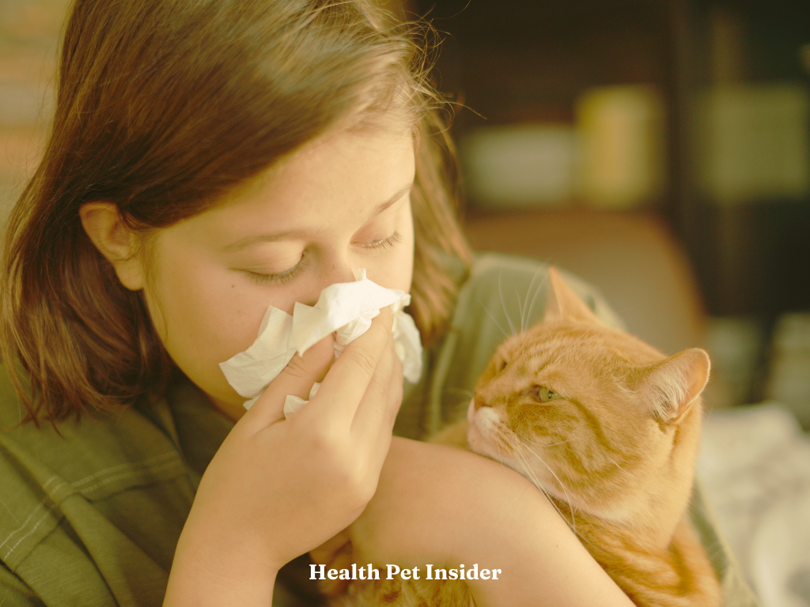
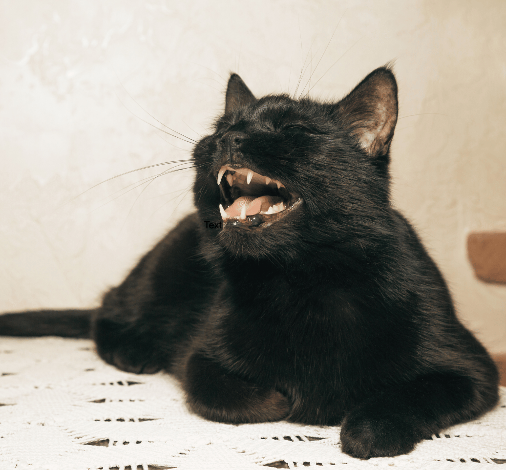
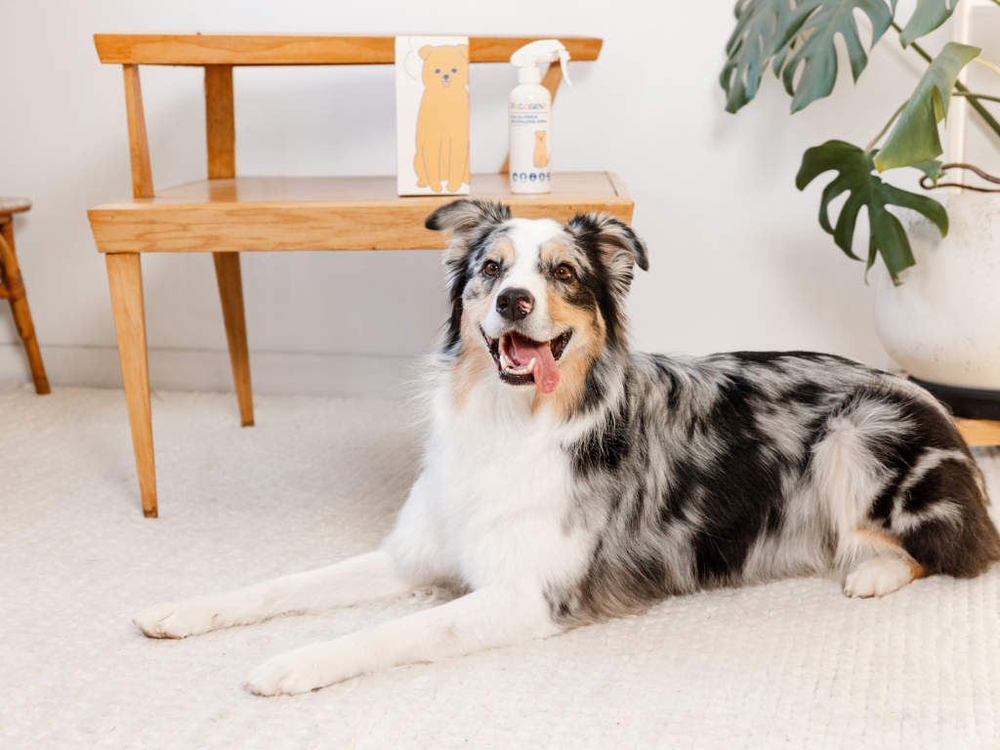
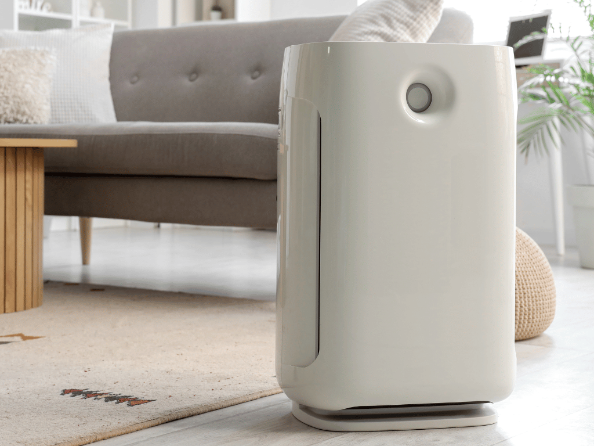
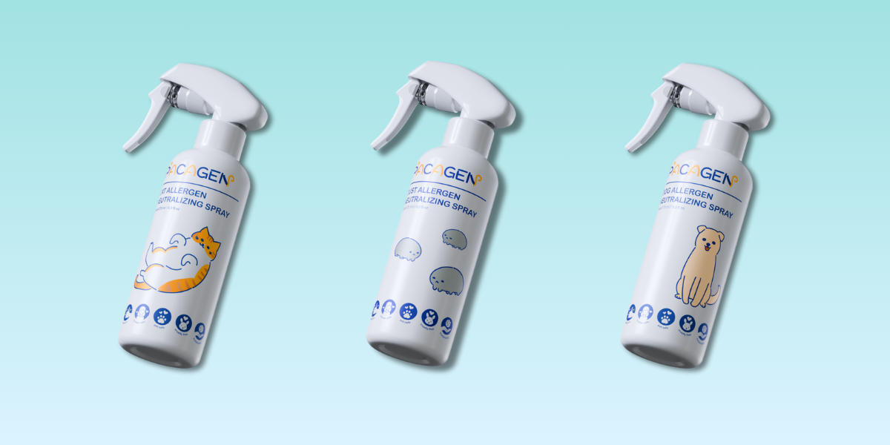
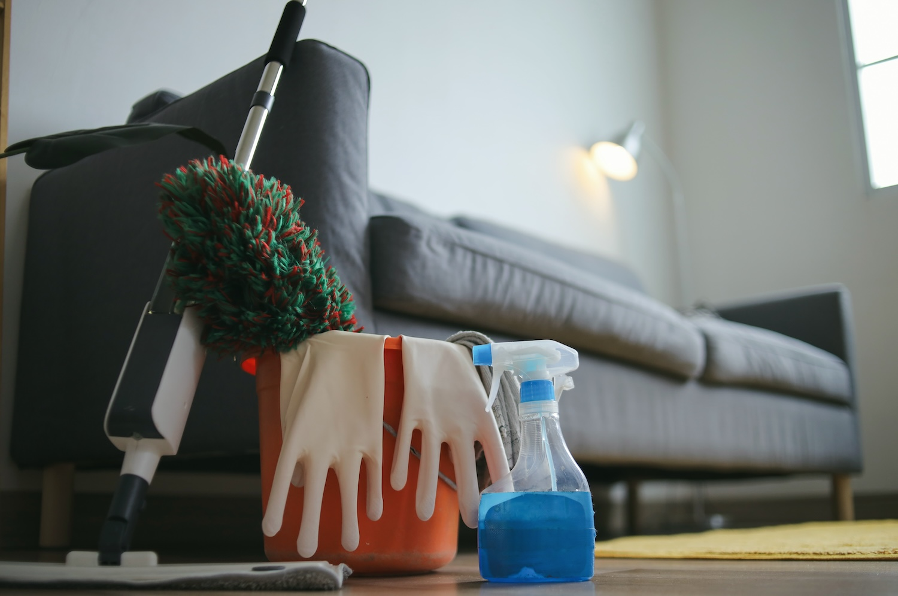
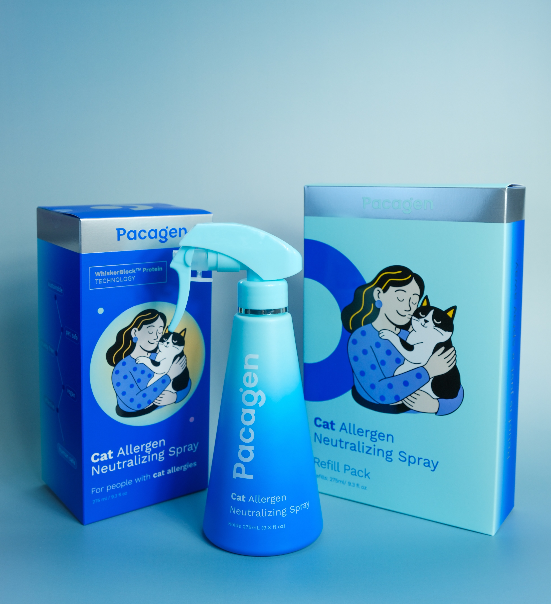

Science-backed guides for pet parents who want fewer allergies—and more cuddles.
Expert articles on cats, dogs, home care, and the products that actually help you breathe easier together.

What makes Health Pet Insider Unique?
In a world full of pet information, what makes us different? Our unique approach is built on a simple foundation: blending professional expertise with genuine, real-world experience. Expert-Driven, Community-Focused: We're not just a collection of articles. Our content is a collaborative effort between veterinary professionals and dedicated pet owners, ensuring you get advice that is both medically sound and practically useful.
Cat
See cat articles →
How to get rid of cat allergies
What drives symptoms at home—and the steps that actually move the needle.

Worst cats for allergies
Breeds that tend to trigger more sneezes—and what to watch for.

Understanding Fel d 1
The protein behind most “I’m allergic to cats” stories.

How cat allergies work
Dander, saliva, and what sets off symptoms around cats.
"I never realized how much I didn’t know about my cat’s allergies until I found this site."
"Clear, concise, and genuinely helpful — it’s my favorite resource for pet health."
"Thanks to Health Pet Insider, my dog is finally living sneeze-free!"
Dog
See dog articles →Best hypoallergenic dogs
Picks that tend to play nicer with sensitive noses.

How dog allergies work
Dander, saliva, and what actually sets off symptoms.

5 best fixes for dog allergies
Simple upgrades that make shared spaces easier to live in.

How often to bathe your dog
A practical bathing rhythm for skin, coat, and allergens.
Home care
See home care articles →
Best home air purifiers
What to look for in a purifier when pets share your space.

Top 5 must-have products for allergic pet owners
From HEPA filters to sprays that target allergens at the source.

How to keep your home fresh when you have pets
Where pet odor really comes from—and what actually works.

5 ways to manage allergens in the home
HEPA, surfaces, and habits that lower what’s in the air.
Latest Articles
See all articles →How to Keep Your Home Fresh When You Have Pets
Pet odor is less about how often you clean and more about understanding where it actually comes from. Here’s what works—and what doesn’t.

Why More Sensitive Households Are Trying to Neutralize Allergens Before Symptoms Start
For people managing MCAS, histamine intolerance, mild COPD, and chronic environmental sensitivity, a scientist-developed approach is reframing the problem.
Spring Kitten Season Is Here. Here’s How More Cats Can Stay Home
Spring and kitten season bring joy, but also overcrowded shelters and hard rehoming decisions. Learn practical ways families, fosters, and brands are helping more kittens find homes.